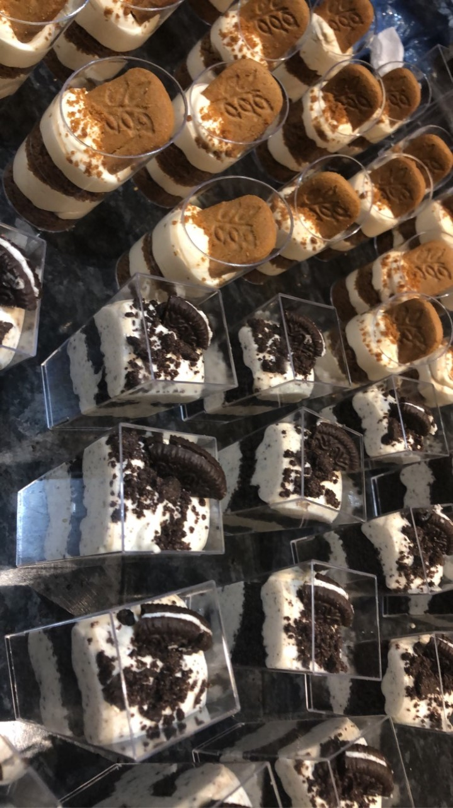
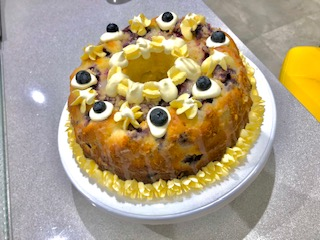
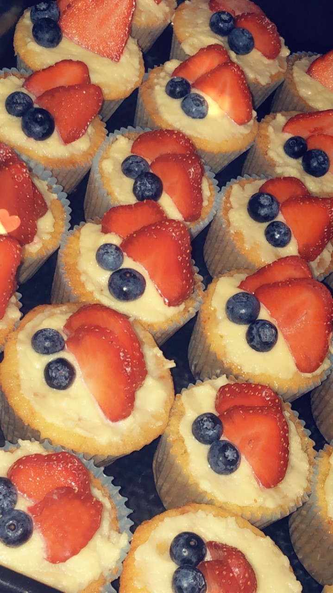
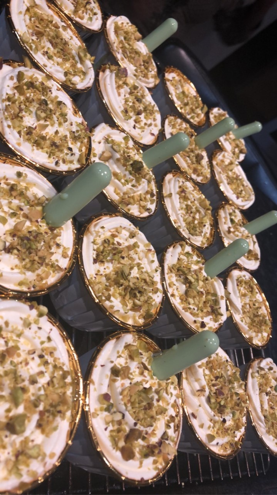

Although the process of experimenting with both sweet and savoury recipes excites me, most recently I have given into my cravings and settled on making a number of confectioneries for my family and friends.
These include:
Cheesecakes
Oreo
Biscoff

Bundt cake
Lemon and Blueberry

Cupcakes

Milk Cakes

Having exercised my sweet tooth adequantely (for now), some of the savoury options I hope to explore in the near future include: